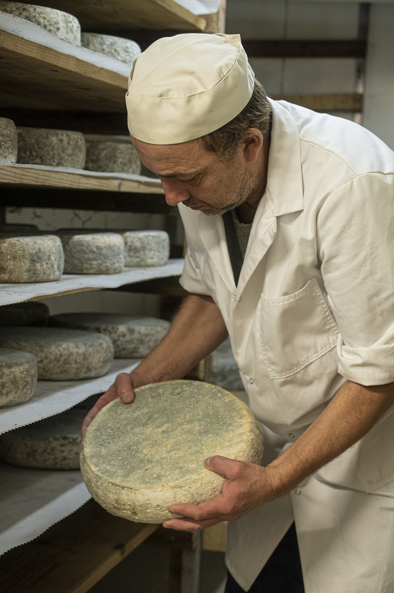
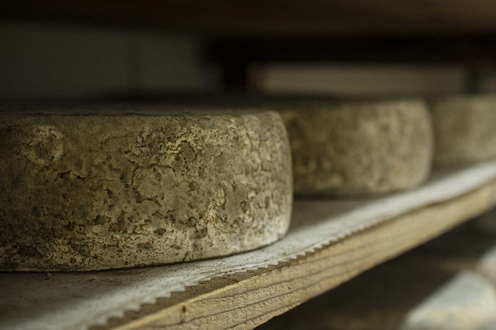
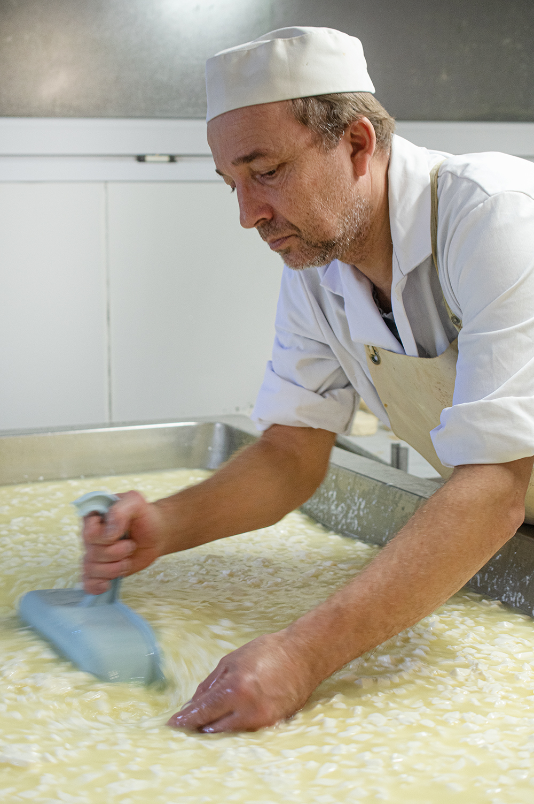
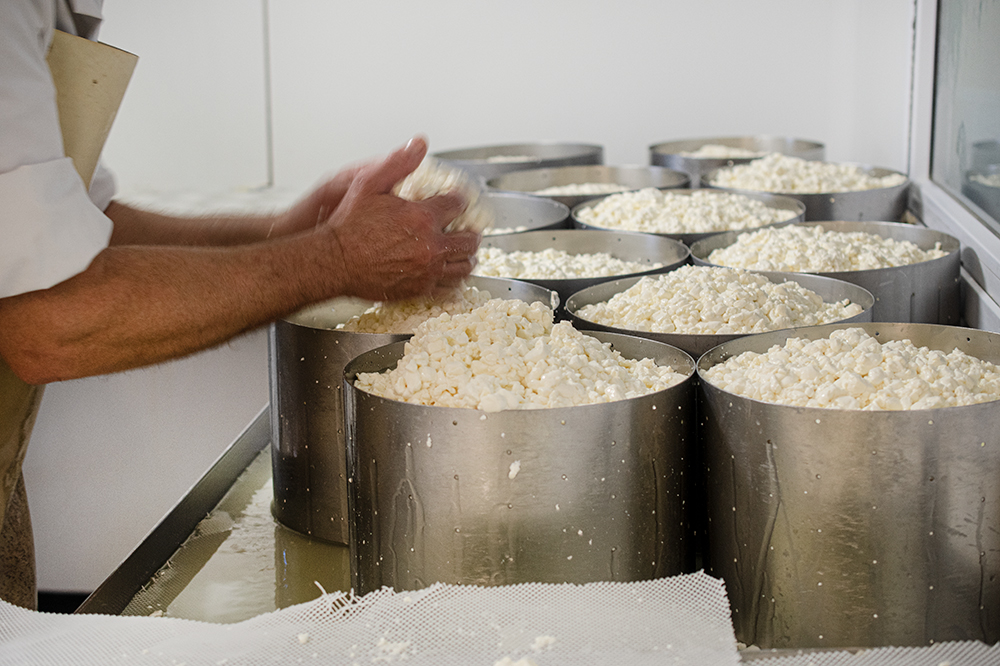
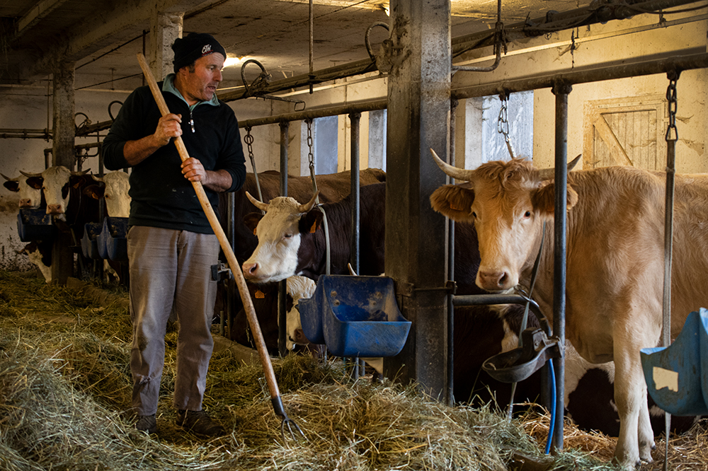

Depuis six générations, la Ferme des Rapilles façonne ses fromages au lait cru, avec passion et respect du vivant, au cœur de l'Isère.

Nichée à 800 mètres d'altitude sur le plateau du Vercors, la Ferme des Rapilles est l'une des premières exploitations du Parc Naturel Régional. Son histoire commence il y a plus d'un siècle, portée par une même famille, les Francoz.
Dans les années 2000, l'arrivée de Philippe Moinier marque le tournant fromager : la fromagerie artisanale voit le jour, et le savoir-faire se précise autour du lait cru entier. En 2009, la ferme obtient sa certification Agriculture Biologique.
Aujourd'hui, Josselin Francoz perpétue la tradition avec un troupeau de 30 vaches des races Abondance et Tarentaise, qui paissent librement sur 60 hectares de prairies naturelles.
Chaque fromage naît d'un soin quotidien, de la traite au cave d'affinage, sans compromis sur la qualité ni sur le respect de la nature.



60 ha de prairies naturelles du Vercors, sans pesticides. Le secret d'un lait d'exception.
Deux traites quotidiennes dans le respect du bien-être animal. Visite libre dès 17h.
Plus d'un tiers du lait transformé sur place, au lait cru entier, sans compromis.
En cave, chaque fromage développe son caractère unique selon son terroir et sa tradition.
Huiles essentielles et homéopathie remplacent les antibiotiques. Les animaux sont traités dans le respect de leur nature.
Aucun pesticide de synthèse. Les herbages naturels du Vercors nourrissent les vaches au fil des saisons.
La certification Agriculture Biologique garantit une démarche cohérente, du sol à la commercialisation.

Tous issus du lait cru entier de nos vaches, façonnés à la ferme selon des méthodes artisanales transmises de génération en génération.
Notre fierté. Ce fromage AOP à pâte persillée, onctueux et doux, est le fleuron du Vercors depuis le Moyen Âge.
Fromage signature de la ferme. Croûte fleurie, pâte souple et lactée qui révèle la richesse du lait cru des alpages.
Raclette bio d'exception au lait cru. Fondue généreuse, saveur herbacée et notes beurrées des prairies d'altitude.
Petite tomme ronde au caractère affirmé. Pâte dense et fondante aux arômes de sous-bois et de fleurs de montagne.
Petit fromage frais nommé en hommage au village d'Engins. Doux, lacté, idéal pour une dégustation directe.
Fromage à pâte molle au goût subtil et équilibré. Sa croûte lavée lui confère une belle complexité aromatique alpine.
Fromage blanc égouttée en faisselle. Onctueux et légèrement acidulé, à déguster nature ou avec du miel du Vercors.
Beurre artisanal à la robe dorée et aux saveurs riches, issu de la crème des vaches des alpages du Vercors.
Nous proposons également du miel local en partenariat avec un apiculteur du Vercors.
Nous travaillons à ouvrir notre boutique en ligne pour vous permettre de commander directement vos fromages bio du Vercors, livrés frais à domicile, partout en France.
Soyez parmi les premiers informés de l'ouverture :
Notre magasin à la ferme est ouvert toute l'année. Venez découvrir nos fromages, et assister à la traite du soir en accès libre.
| Lundi – Vendredi (matin) | 8h30 – 12h00 |
| Avril – Octobre (soir) | 17h00 – 19h00 |
| Novembre – Mars (soir) | 16h00 – 19h00 |
| Traite — accès libre | 17h00 – 19h00 |
| Magasin à la ferme | 97 ch. du Rivet, Engins |
| La Ferme des Saveurs | Sassenage |
| Biocoop | Région grenobloise |
| Marché local | Dates sur Facebook |
| Plateforme Locavore | locavore.info |